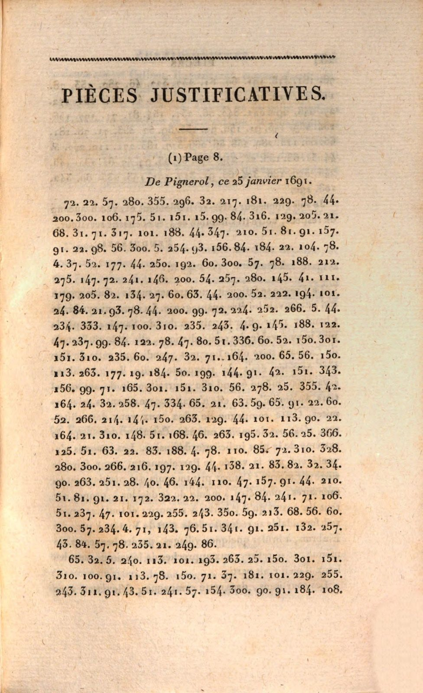
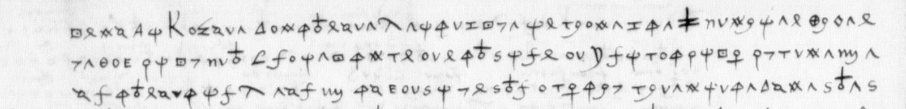
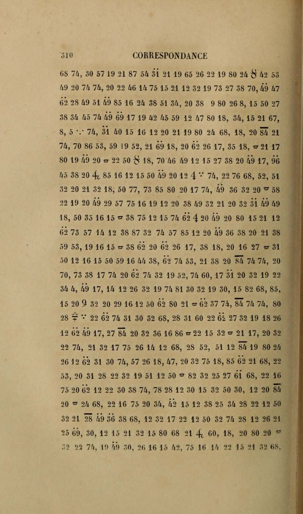
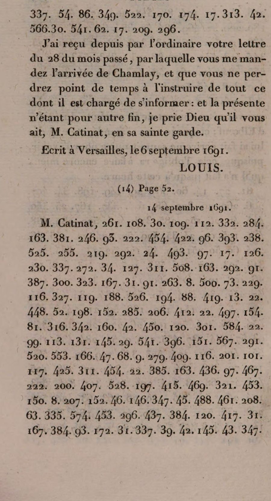

∑ The ledger so far
65 targets taken from the three lists. 60 were attacked online; 5 stop at an archive door before any cryptanalysis is possible. Every outcome is one of seven kinds, and the honest denominator for a “success rate” is the 60 attacked, not the 65.
Every target by date, 1404–2015. Hover a dot for the name and outcome.
Counted from the results tables in the repository README by _build_stats.py; regenerated 17 September 2026. “Already solved elsewhere” and “no message” are not decipherments and are not counted as such. Forster (1644) is counted among those read by others. Rows are documents, not correspondents: Ségur f. 143 and Urquhart’s distich stand as separate open items beside the letters and the octastich that were read.
The Voynich manuscript is probably elaborate nonsense
It is a real book from the early 1400s, but the text is not a language in disguise. Every simple cipher of every European language we could test is ruled out: the writing is far too predictable, letter to letter, for any of them. Two explanations are left standing, a rigid glyph-by-glyph encoding with something behind it, or carefully made meaningless text, and the numbers lean toward meaningless. The write-up names the five tests that would settle it.

Fra Giovanni di Lucca to the Emperor: a figure cipher that reads two ways
DECODE R2159, listed as non-decrypted and left at Al principe di… on Tomokiyo’s page, because the crib puts i and n on the same figure. It is not a slip: 17 stands for both, and 19 for both t and s. Fix the eight consistent crib letters, anneal the rest, and every seed gives the same Italian while shuffled controls give none. A Viterbi pass over the two alternatives reads the letter end to end: keep the Turk off Rákóczi, raise Moldavia against him, and two thousand Cossacks.
Armstrong to Madison: the coded postscript, read in full
Forty-nine groups of the State Department’s “THE = 972” diplomatic code, unread since 1808. The clerks’ pencil decodes on other despatches in NARA microfilm M34 roll 13 gave back 580 groups of the table, enough to read the postscript through: Armstrong telling Madison who should be consul, and why.

The Swatow telegram to Sun Yat-sen, which the Japanese Foreign Ministry could not read
Twenty consonants, five vowels, ten-letter words: a code condenser laid over the standard Chinese telegraph code. The family of systematic tables is small enough to try every one, and a single key reads the message: Mo Qingyu declaring independence at Chaozhou, and Sun’s men ordered out of the Swatow garrison headquarters, 3 April 1916.

Richelieu to M. de Rancé: broken from the ciphertext alone, then found in print
Two partly enciphered letters of July 1629, listed as undeciphered by the reference catalogues. The homophonic alphabet, its doubling mark and the nomenclature were recovered from the transcription alone, and the reading then agreed word for word with a decipherment Avenel printed in 1858 that the catalogues had missed.
Feuquières to Catinat: a Louis XIV war plan read for the first time since 1893
The 1819 editor of Catinat’s papers printed the despatch in figures and gave up on it; Bazeries read it and never printed the text. The break is a second letter in the same 367-group petit chiffre, Louvois to the previous governor of Pignerol, which the same edition prints with its translation. Hand alignment carried between the two letters reads the plan for the surprise of Veillane: two roads into the town, eighty horse to Saint-Ambroise, an attack at two points, and the dragoons not to be let escape into the castle.

Maltravers to Ormonde: fifty-nine figures, a regular key, and Wentworth’s own confirmation
Doubled letters written with consecutive figures gave away a block alphabet: consonants three figures each from 7, vowels from 64, nulls 91 to 111. Every spelled word reads, and the nomenclator was then checked against Wentworth’s dispatches in Knowler’s Strafforde’s Letters: the King refusing to see Kildare, and Ormonde moved for the Council in exchange for Sir Piers Crosby.

00 Recent findings
Newest first. One line each — the evidence is in the write-up linked, or in the tracker in the repository. The date on each line, and on every write-up, is the day the finding landed in the public repository, taken from the commit history.
- Sormano and de Vaulx to François I, Ferrara, February 1529 — read; the catalogue’s top row, three letters in a symbol cipher whose key had been published and never applied to them. BnF fr. 3096 nos. 65 and 66 are the same despatch of 23 February written twice (no. 66 is docketed duplicata) and no. 63 the sequel; the two glossed siblings in the volume gave Lasry his key in 2023. Applied at glyph level — 18,273 signs segmented from the scans, clustered, classified, then every line read on a review sheet — it reads nos. 65 and 66 end to end and no. 63 as far as its leaves go, and the leaves add a null, a double-circle nomenclator for duca and the crossbarred long-s as e. The pair enciphers different stretches, so each is the other’s crib. Alfonso d’Este, asked to lead the French army on Naples and offered the kingdom, risolutamente concluse per cosa dil mondo non voler per sé alcunamente accettare il regno et manco far l’impresa a suo nome; Sormano writes that this confirmed quello che io sempre dubitai. Write-up.
- BnF Espagnol 318, the Catholic Monarchs’ ciphered letters, 1497–1504 — the catalogue’s oldest entry has five ciphered letters, not four, and four different answers: one solved in print in 2020, one keyed here and proved on its own glosses, one read in part, two named and blocked on a key. No. 5 was never open — Ivan Parisi printed the whole text in 2020, having found that Federico of Naples had his secret letter enciphered in the Spanish ambassador’s own cipher, by the ambassador’s hand; a Spanish speaker’s failure to use the double-s sign in possano and promesso gives him away. No. 92, the Great Captain to Lorenzo Suárez of 17 August 1500, which nobody has read, is in the Cifra general de los Reyes Católicos that Galende Díaz printed in 1994. Tomokiyo proposed that from the look of the code groups; it is proved here against the partial decipherment a later hand wrote between the lines of f. 116r — yuy Lo, boy Tiempo, zez Por, xiz+7 Estar, xuy En, baz Tanto, xix zol El negocio, zik No, eight hits and no misses — and a gloss-anchored line reads straight through, …y tiempo, por estar en tanto…. The key is transcribed, 683 groups. No. 95 has George Lasry’s 2022 alphabet and no published text; segmenting its 963 signs, clustering the shapes and labelling the clusters against his key reads about two thirds, with letter frequencies that come out Spanish before any decipherment (e 9 %, a 7 %, q about 1 %). The leaf is about the French: emos franceses … que puedan merced … de Francia … señoría … muy grandes cosas … no creo que … quieren go|uernar … por obra creo que … amigo … escreuir a … dificultad. Two of Lasry’s signs corrected. Nos. 93 and 94 stay unread but are no longer “unidentified”: both are ordinary secretariat ciphers, a homophonic sign alphabet with a one-part CVC nomenclator, and their code initials exclude both printed keys and fall inside the band of the Gran cifra of 1501–04 (lnq against Bergenroth’s LUQ = capitán). The alternative that they were runs of letter-shaped signs was tested and rejected: 1,016 signs of f. 118r anneal to −3.5 nats a token where real Spanish scores −1.8, and 66 % of the p signs sit inside pie. What blocks them is one Madrid manuscript, BNE MSS 20.211/52, bot-checked at every endpoint and absent from Europeana and Hispana. Write-up.
- Nicolas Raince to Montmorency, Rome, 13 May and 20 November 1526 — about 106 lines that exist in no edition, read; the published key had been read off by one column. BnF fr. 2984 keeps eight of the embassy secretary’s ciphered despatches. Tomokiyo published the key in 2020 and no plaintext, but reading which glyph sits under which letter in his table by eye slips a place: l is the 9, not the round s; m is the round s, not the long f; n is the long f; and H is an s. Measured off the image instead — every ink blob within 15 px of a header column — the table resolves a control line with nothing left over, s [null] qui estoit en la court de Savoye [null] est party pour venir icy, and 86 of the 106 lines then read by hand off the microfilm against numbered-token images. Nine days before the League of Cognac: the Castilians and the Bourguignons, delibéré prendre le chemin de Valence, a capitulation for which ilz seront cause de la destruction … de la part d’avoir faict capituler, mondict seigneur l’Admiral luy avoit dict que seroit celuy qui y tiendroit, la peste qui est au logis, des advis qui viennent aux imperiaulx par leurs, and a man taken un jour, en plaine place pres du palais, un nommé Pietro Anthonio. Two months after the Colonna raid, the 20 November letter turns on a pontificate that seroit la cause de la totale ruine de sa maison. The clear close of 13 May, transcribed here, expects Andrea Doria at Civitavecchia within a day with six galleys and two brigantins. The Gallica leaf numbers run two apart, which looked like half the volume missing and is only pagination on odd pages. Write-up.
- Jean du Bellay to Montmorency, London, 1528–29 — the catalogue’s five “undeciphered” letters have all been in print in clear since 1688 and 1905; the leaf that has never been read is the one the catalogue did not list, 16 June 1529. BnF fr. 3077 and 3078 are bound by day and month without years; Le Grand’s Histoire du divorce (1688) prints the Court’s readings of the four 1529 letters, and the fifth (fr. 3077 no. 23) is the 28 October 1528 letter that Bourrilly and de Vaissière deciphered in 1905 with a key they recovered. The 22 June 1529 leaf (fr. 3078 pp. 25–27) carries the decipherer’s interlinear reading over every sign, and aligning it re-derives the key Tomokiyo published as “Bayonne’s Cipher (1529)”, with additions (B = o; word signs for bien, fault, paix; a boxed cross for Wolsey), and that key reads the 17 October letter on Wolsey’s fall straight from its four cipher pages, j’ay esté veoir le Cardinal en ses ennuis, as Le Grand printed it. The 16 June leaf (p. 21, DECODE “non-decrypted”) then reads in stretches: semblant [que] madame ne fust … pour conclure … la [name] luy ayt par[lé] … [il] fault envoyé querir pouvoir, il ne fauldroyt oublyer a le faire. Scheurer (1969) not checked. Notes.
- Henri IV to Béthune, 9, 10 and 22 November 1601 — two of the three read, and a measured ceiling on the third. BnF fr. 3484 nos. 7, 8 and 12 are catalogued “avec chiffre” without decipherment. F. 36, four leaves on, is the minute of the 10 November letter in clear, and aligning it with the cipher recovers a Villeroy-office key of the design Bazeries printed for Béthune’s brother in 1599: dix mil escuz par l’entremise du sieur de Sillery … sans avoir esgard à l’arrest obtenu par lad. duchesse de Nemours. The 22 November letter, thought to be forty lines of cipher in blocks, is nothing of the kind — it interleaves clear French with eighty short ciphered runs inside the same lines, so it reads without breaking them, and all four pages are now transcribed: the Camaiano pension paid to “relever le party françois a Rome”, Barberini’s coming, and the courier sent to invite the Pope to the dauphin’s baptism, lequel se faict tres bien nourrir et se fortifie a veue d’oeil. The 9 November letter, a solid page of cipher with neither minute nor gloss, stops at about six words in ten, and an oracle bound says why as a number: the decoder already scores above the ceiling its own transcription allows, so some 29 % of the letter’s letters cannot be produced by its glyphs at all. Ten further attempts, each measured, failed to move it; two careful readers of the same ink agree on 69 % of its tokens. What would finish it is archival — Cinq cents de Colbert 346, copies of the Béthune despatches from August 1601, made from the minutes and not digitised. Write-up.
- Nevers to Pisany, 8 September and 14 October 1593 — two of the catalogue’s seven Nevers letters read; the set is two keys, not one. Tomokiyo’s Nevers cipher no. 46, read from the full-resolution table in fr. 3995 f. 87 and checked against the office’s interlinear decipherment of a Gondi letter in the same key, resolves every figure of the two letters to Pisany (fr. 3985 f. 209, fr. 3986 f. 168). L’on dissuadoit [le Roy] de rechercher [que le Pape] luy donnast l’absolution … qu’il n’estoyt besoin qu’il allast sans cela, parce qu’il ne feroit rien … l’on n’a volonté de contanter le Pape, que l’on n’y aille poynt. The five letters to Revol are in the Court’s symbol cipher no. 60: the 27 August copy is in clear, the 9 October copy carries about ninety symbols, three were not reached on the image. Write-up.
- Lanssac’s Polish election letters, April–May 1573 — read; the first class-A item of the new catalogue, and with it the three election letters whose “déchiffrement” was only a gutter-cut gloss. BnF fr. 4735 f. 124 (26 April) is catalogued “avec chiffre” with no decipherment. One surviving gloss line on the sibling f. 154v, “car je n’ay pas cinquante escuz”, fixes eleven signs; the fragments on f. 124 fix the rest; a pinned annealer fills in the remainder against shuffled and blind controls. The same key then reads 1 May to the King (ceste nation est autant vénale et sujette à se laisser gaigner par argent comme sont les Allemans), 1 May to Anjou (l’Empereur en y a despendu plus de trois cens mil … faisant le pis qu’il peult contre vous) and 9 May from Płock, the election carried contre la volunté et menées du Grand Seigneur, de l’Empereur, des princes de l’Empire, du Roy d’Espaigne, du Moscovite et du Roy de Suède, qui tous estoient bandez contre vostre Majesté. Tomokiyo’s table for this cipher is off by one letter from m. Write-up.
- Philip II to Mendoza, 7 September 1589 — resolved; the catalogue’s “second undeciphered letter” is the 1589 decipherer’s copy of the first, and the general cipher Cg.13 is partly rebuilt from the pairs. BnF fr. 3641 holds both letters of that day twice, as Cg.13 originals (ff. 10, 12) and as fair copies with the unread code words in the margin (ff. 14, 76). Aligning them gives some seventy syllables and fifty code groups, reads pur respeto, mes vuestro, san negocio, and shows the copyist’s “Francia” to be England. Fourteen groups still open. Write-up.
- Urquhart’s Cyphral Octastich, 1652 — read in full, without the plaintext the August 2026 AI claim published; the distich claim not reproduced. The k-th number indexes physical page k of Urquhart’s own Jewel, and he took the first word of the initial he needed, a property of number and page alone. The public transcription was thirteen numbers short; the 1983 edition’s photographs on the HCPortal record give 285, which decode straight against the TCP text with 238 of 284 first-occurrence hits against 0.43 for shuffled and random-page controls: a prayer for Charles II, Great Lord, mantaine that regal familie … Our Emperour, King, Monarch and Protector. Amen, so be it. Ten letters of line 5 stay unread. The distich rule gives 34 of 64, chance, and no English. Full write-up →
- Louis XIV and Louvois to Catinat, July–September 1691 — read; seven Grand Chiffre despatches, five of them never printed in clear, including the King’s decision to abandon Piedmont. The 1819 Mémoires de Catinat print 12,362 groups the editor could not read; Bazeries built his table from them in 1893 and printed only the two letters that served the Man in the Iron Mask. His table reads all seven from the library’s OCR, checked against the page images; the two controls agree at 98 and 99 %. The 14 September letter, twenty pages of figures, weighs the honourable course against the solid one and chooses the solid: over the Alps at the end of the campaign, hold the passes, keep Carmagnole while the Pope negotiates, then burn it, and take Coni in the winter. Full write-up →
- Feuquières to Catinat, 1691 — read; a Louis XIV war plan, the first reading since Bazeries’ unpublished one of 1893. The code is the petit chiffre of the Pignerol governors, and a second letter in it, Louvois to d’Herleville of 6 September 1690, is printed with its translation in vol. I of the same 1819 edition. Every aligner and annealer failed; hand anchoring carried between the two letters reads 586 of 601 tokens. Feuquières is ready, names the two roads into Avigliana, cannot see how to pass the eighty horse to Saint-Ambroise, and will keep the dragoons from escaping into the castle. Full write-up →
- Colbert passages, 1674–75 — two “unsolved ciphers” are one key, and it is Maulevrier’s; not read. Read from the Gallica images: the duc de Charost’s letter from Calais is 3 July 1675, not 1673, and its 55 figures share thirteen groups, a four-group phrase and a sentence-final trigram with the abbé de Gravel’s 51 figures to Maulevrier of 1674; Charost says he is sending Maulevrier “la mesme nouvelle” that morning. La Roncière’s printed catalogue then gave every Charost and Maulevrier letter by folio: all 24 online are in clear. A monotone annealer reads matched 106-token controls of both strict alphabetical designs this office used and fails the target under each; looser designs fail their controls. Probably a word nomenclator; needs the key or a clear copy of the news. Notes →
- Roosevelt cryptogram, 1935 — explained; the numbers 1 to 52 written once each, not a cipher. Ernst’s 2017 doodle claim confirmed at glyph level from the NSA book scan; the permutation drifts upward and falls into sixteen rising chains where a shuffle gives 26, and the testable ordered-key readings fail while seven of eight matched controls are read. Full write-up →
- Henry of Navarre to Ségur, 1585–86 — read; an alphabetical syllabary cipher, and the sender was not Henry III. Three of the four “Henry III” letters in BnF 500 de Colbert 401 (ff. 233, 239, 288v) are Navarre’s, to his envoy raising a German army. The upper figures fall into blocks of five (mod-5 test), a syllable table ba be bi bo bu … in alphabetical order; an annealer built on that structure, with the letters’ own clear French as context, returned a key that is alphabetical by itself (a 4–6 … u 45–47, x y z 48–51, doubles ée ll ss) and reads a matched control at 97%. Conclude with Duke Casimir, raise the largest levy and march it; Clervant’s two thousand reiters; the Vivarais or Dauphiné road; “la plus grande levée qui ayt esté faite”. A dozen word-signs glossed or open; f. 143 (1583) is another key. Write-up.
- From Warsaw, 24 December 1627 — read; the alphabet was in plain order. DECODE R1408, listed as non-decrypted with only a dateline in clear. The stray letters a and m are nulls, the letter pairs stand for consonants, the rare groups for syllables; a 5-gram-plus-dictionary annealer converges from random and seeded starts where shuffles fail, and the key it returns puts a–m on the odd figures 13–33 and n–z on the even ones. The writer, back from Nikolsburg, presses for a promised canonry of Olmütz for one of the sons of “this Most Serene [Queen]”. Word codes glossed only. Full write-up →
- Bordeaux to Brienne, 1653 — a Brienne-office cipher, identified but not read. Thurloe’s intercept, 810 tokens over 156 symbols. The design is the 1651–54 family in which consecutive numbers run through the syllabary alphabetically across the diacritic series; a solver with that order as a prior reads matched 810-token controls to 99%, and the letter never leaves the failed-seed band. One misread diacritic in ten drops the control to 52% and 9%, and the transcription is provisional. The 1654 companion letter was solved by Lasry in 2025 and is closed. Notes →
- Armstrong to Madison, 20 February 1808 — the 2025 contest solution does not hold. Its 56-entry key covers 36% of the groups, leaves 93 of its own 133 mapped occurrences unread, and uses five numbers absent from the letter; keys built by the same procedure on a shuffled ciphertext fit the claimed sentence better. Madison said in 1808 that no such cipher was in the office, and the roll-13 decodes are all THE = 972. The letter stays unsolved. Notes →
- Richard Forster, 1644 — found already read; Tomokiyo’s page still says unsolved. Deciphered by Lasry, by Biermann, and again by Pitt in September 2026. Verified here at z = 8.8 against 20,000 permuted keys, and 31 of 34 symbols recovered blind once word edges are used and the French model writes u for v; six matched controls read. A mixed homophonic alphabet, not a regular Stuart key. Full write-up →
- Birago to Nevers, 1571 — structure fixed, not read. Re-transcribed glyph by glyph from Gallica: two-digit letters with heavy vowel homophony, marked one- or two-digit code groups, six nulls. Variable-length, polyphonic and syllabic designs excluded with methods that read their controls; at 228 letter tokens over 62 symbols the annealer fails its own matched controls, so the target’s negative is the method’s limit. No sibling letter in the volume. Notes →
- BLUME SALAMANCA telegram, 1937 — a transposition of telegraphic Spanish; attempted, not solved. A lag scan excludes every single columnar and every reversed-direction double columnar (controls z 11–22, telegram 3.3); exhaustive enumeration of the second key, proven on plants up to 41 × 8 and 30 × 10, excludes forward double columnar and both mixed conventions with a second key of ten or fewer letters. Local search on long second keys fails on plants at this length. What is left is the German-practice region, two keys of 15–25 letters, and that needs the second telegram. Notes →
- Fra Giovanni di Lucca to the Emperor, 1644 — read; a polyphonic figure cipher. DECODE R2159, listed as non-decrypted and left at Al principe di… on Tomokiyo’s page because the crib puts i and n on the same figure. Fixing the eight consistent crib letters and annealing the rest, every seed gives one Italian reading and five shuffled controls give none; 17 is i or n, 19 is t or s, and the 231 figures read end to end: keep the Turk from helping the Prince of Transylvania, raise the Prince of Moldavia against him, give him two thousand Cossacks, and no peace until he is humbled or beaten. Full write-up →
- SP53/16 nos. 78 and 79, 1585 — one key for both letters, and still below threshold. Ten of the twenty commonest symbols are common to the Tempest and Barret letters against three expected by chance, so the text pools to 1151 groups; the homophonic annealer then fails planted English and French controls at that length as it did at 507. The labels are glyphs, so these are symbol ciphers of the Mary–Castelnau class. Needs the images and the SP 53/22 keys. Notes →
- Charles I and Nicholas to Boswell, 1643 — alphabet solved (R. Pitt), text read in substance. A 24-letter row repeated four times over 20–115, verified at z = 9.6 against 20,000 permuted rows. Added here: the four graphic signs are word-signs introduced inside the spelled word (good, Cousin, Master, us); the King’s letter is to the Duke of Courland’s envoy at The Hague and sends him the re-credentials Simpson printed in 1893; Nicholas asks Boswell to hinder the Dutch embassy. A dozen single-occurrence codes remain. Full write-up →
- Moray to Wood, 1568 — attempted; undetermined at 134 groups. A 5-gram Scots annealer reads five of six planted controls of the same 32-symbol profile at 93–98% and returns nothing on the letter, in Scots, English, French or Latin; no null, separator or crib survives. The catalogue says the passage is Border news, i.e. names, and 13% of genuine Scots passages score below the solver’s false optimum. Needs the page or a sibling letter. Notes →
- Feuquières to Catinat, 1691 (earlier session) — Bazeries read it in 1893 and never printed it; since read, see above. His book, read in full, confirms a 367-group petit chiffre but gives neither text nor table; the reading is in his papers at the SHD. Here the ciphertext is corrected from the 1819 pages, the two-part design fixed, and the solvers fail a matched control. Notes →
- Louis XIV to Chaulnes, 1690 — code design established, not read. 300 groups verified from the page images, a one-part Croissy table of at least 535 entries identified from its step-10 chains, and no printed plaintext found; the annealer recovers 4–12% of a matched control, so 300 groups do not fix a 116-entry nomenclator. Notes →
- Maltravers to Ormonde, 1634–35 — nomenclator confirmed; moved from partial to solved. Wentworth’s own dispatches in Knowler’s Strafforde’s Letters (1739) describe the King refusing to see Kildare and Ormonde moved for the Council “in exchange” for Crosby, clause for clause with the cipher passages. Seven of nine codes fixed. Full write-up →
- Voynich manuscript — adjudicated, not deciphered. Plain or simply enciphered European language excluded on transliteration-robust entropy; grille and free-edit self-citation disfavoured; verbose encoding against structured meaningless text left roughly even, with the tests that would separate them. Full write-up →
- Scorpion letters, 1991 — below the unicity distance. Both ciphers carry more key than the text has redundancy; matched controls produce fluent false English at 3–13% accuracy, and a claimed 2018 solution scores worse than those false solutions. Full write-up →
- Copenhagen cryptogram — not a simple substitution of any language tested. Two transcriptions, ten languages, six reading conventions, 300 restarts: nothing readable, while the same solver recovers same-length controls at 96–100%. Full write-up →
- Vatican Part 5, 1542 — Meister keys verified from the scans; unit-level attack fails on segmentation. The letter is dated from its own cleartext, the historically matching key is excluded on structure, and a matched control shows why a two-stage attack cannot work. The DECODE images, now accessible, will fix the dots and uncertain digits, but the documents carry no separators between tokens, so they cannot restore a word division the manuscript never had; the key or the clear copy in Chigi M II 49 remains the route in. Full case →
- Koehler cryptograms, 1944 — skipped as intractable. Not Enigma, since the letter counts rule out machine output, and not any periodic or running-key hand cipher. What is left needs the prayer book or the FBI’s file.
- Censorship manual steganograms, WW2 — blocked on image resolution. The map’s shift direction and the exact Morse any German wording would leave are now fixed, but the pen marks are 2–5 pixels in the best public photograph. Needs a high-resolution scan of KV 2/2424.
- Debosnys, 1882–83 — attempted, not solved. The cipher poem is rhyming couplets in a French syllabary, every testable crib is excluded, and the surviving text is too short to break without one. Full write-up →
- Catokwacopa, 1875 — readings audited. Of 1,645 names, only Conington, Jowett, Shirley and Hertford fit their lines, so the Oxford reading is right in outline. Exact alternatives found for two lines, and four lines shown to be undecided by the letters.
- Vatican Part 5, 1542 — cipher family identified as Antonio Elio’s polyphonic-syllabic design, built for the chancery that sent the letter. Five measurements match it, one of them recovering a written chancery rule. Full case →
- Schmeh’s Top 50 — audited entry by entry. Nine are closed and the list does not say so; one entry is an April Fools’ joke that has sat unmarked for nine years.
- ADFGVX, 1918 — the 2017 thread consolidated: 9 solved, 3 partial, 10 open. Lasry’s unpublished sixteenth key rebuilt; Norbert’s two-block-edit method reimplemented with a German model re-derives seven pages blind; the ten open messages resist all fifteen keys and a key-free attack that fails its own control. Full write-up →
- Charles I, 1648 — two keys excluded on both unread letters, including the Titus key of the same month and the same escape plot.
- Berthier to Napoleon, 1812 — plaintext located, in print since 1912, drawn from the very archive carton the cryptogram sits in.
- Chinese gold bars, 1933 — constructed, not enciphered, now corroborated from a second direction by the documentary evidence. Full case →
01 Write-ups

Raince to Montmorency, Rome, 1526 — the key was misread by one column
Eight ciphered despatches of the French embassy’s secretary at Rome sit in BnF fr. 2984; about 106 lines of them, the 13 May and 20 November 1526 letters to Montmorency, exist in no edition. The obstacle was never cryptanalytic. Tomokiyo published the key in 2020, but reading which glyph sits under which letter in his table by eye slips a column: l, m and n were each a place wrong, and every reading built on it was corrupt. Measured off the image instead — every ink blob within 15 px of a header column — the table resolves a control line glyph for glyph with nothing left over, and 86 of the 106 lines then read by hand from the microfilm. Nine days before the League of Cognac: the Castilians and the Bourguignons, le chemin de Valence, a capitulation for which ilz seront cause de la destruction, the plague in Rome, advices reaching the Imperials by their own people, and a man taken un jour, en plaine place pres du palais. Two months after the Colonna raid, a pontificate that seroit la cause de la totale ruine de sa maison. The clear close of 13 May, transcribed here, expects Andrea Doria at Civitavecchia within a day with six galleys.
“qui estoit en la court de Savoye est party pour venir icy” · “[le] pontificat seroit la cause de la totale ruine de sa maison”
read →
Henri IV to Landgrave Maurice — the figures Rommel printed in 1840 and the key he printed in 1846
Rommel set the King’s ciphered passages to the Landgrave of Hesse-Kassel as rows of figures he could not read, then printed the key six years later with one sample and stopped. Put together, they read all seven passages, about 4,100 groups: Bouillon and the German princes, the Gunpowder Plot and Mérargues “forgés sur mesme enclume”, two million livres for the Dutch, and on 20 May 1606 the call to the princes to take counsel together against a Spanish King of the Romans, “pour la conservation de la liberté germanique”. Contributed by Arya Sanketbhai Patel.
“tous les roys et princes qui doivent avoir jalousie de l’agrandissement … de la puissance espagnole doibvent d’heure aviser et prendre conseil ensemble”
read →
Louis XIV and Louvois to Catinat — seven Grand Chiffre despatches, and the decision to abandon Piedmont
The 1819 editor of Catinat’s papers printed seven court despatches of July–September 1691 in figures and could not read them; Bazeries rebuilt the code from them in 1893, printed two in clear for the Man in the Iron Mask, and stopped. His table reads all seven from the library’s OCR of the volume, 12,362 groups, checked against the page images; the two he printed agree at 98 and 99 %. The other five are read here for the first time, among them the King’s twenty-page letter of 14 September: bring the army back over the Alps, hold the passes, keep Carmagnole to cover the negotiation with the Pope, then burn it, and take Coni in the winter.
“je me suis déterminé à préférer le parti solide à l’honorable” · Louis XIV, 14 September 1691
read →
The Voynich manuscript — hoax, cipher or language, adjudicated
Six computational tests on the transliteration against eleven languages and implemented hoax generators, each re-run adversarially, and five literature sweeps. A plain or simply enciphered European language is excluded on transliteration-robust entropy; a verbose encoding and a structured meaningless text are left roughly even, with the tests that would separate them.
h2 2.2–2.9 bits against a 3.3 floor · slot grammar 1.7–2.3× more rigid than any language
read →Feuquières to Catinat — the petit chiffre of the Pignerol governors
The 418-group despatch of 25 January 1691 that the 1819 editor of Catinat’s papers could not read and Bazeries read but never printed. The same edition prints a second letter in the same 367-group code, Louvois to d’Herleville of 6 September 1690, with its contemporary translation; the two letters share 72 groups, and hand alignment carried between them reads 586 of their 601 tokens. Feuquières’ plan for the surprise of Veillane: two roads into the town, eighty horse to Saint-Ambroise, an attack at two points, and the dragoons not to be let escape into the castle.
“j’attaqueray [par] deux endrois, et surtout … prendray garde que les dragons ne puissent m’eschaper”
read →
Armstrong to Madison — the coded postscript
Forty-nine groups of the 1,600-element “THE = 972” diplomatic code, read in full after reconstructing 580 groups from the State Department’s own pencil decodes on NARA microfilm M34 roll 13.
“Russel ought to be the consul: he is an American by birth … Next to him in fitness is O’Mealy, but he is, like Warden, an Irishman.”
read →Fra Giovanni di Lucca to the Emperor — a polyphonic figure cipher
DECODE R2159, 231 dot-delimited figures of Italian, listed as non-decrypted and left half-read on Tomokiyo’s page because its crib is self-contradictory under any substitution. It is a 24-figure alphabet in which 17 stands for both i and n and 19 for both t and s. Eight crib letters fixed, the rest annealed, every seed agrees, shuffled controls do not; a Viterbi pass over the two alternatives reads it end to end: an offer to keep the Turk off Rákóczi, raise Moldavia against him and give two thousand Cossacks.
“il principe di Bogdania, et li darò dumilia Cosachi … che non faccia pace fin che l’habbi humiliato o vinto”
read →From Warsaw, 24 December 1627 — an alphabet in plain order
DECODE R1408, one page of figures and stray letters with only a dateline in clear, listed as non-decrypted. The letters a and m are nulls, the letter pairs are alternates for consonants, the rare groups are syllables, and the alphabet, recovered blind by a 5-gram-plus-dictionary annealer against shuffled controls, turns out to run in order: odd figures a to m, even figures n to z. A reminder that a promised canonry of Olmütz for one of the Queen of Poland’s sons has not been conferred.
“un canonicato d’Olmiz ad uno de li suoi figli … si degni darne subito a me benigna risposta”
read →Richelieu to M. de Rancé — BnF Français 3829
Ciphertext-only recovery of a homophonic alphabet with a doubling mark and nomenclature; then found to agree word for word with the decipherment Avenel printed in 1858, which the catalogues had missed.
“Castor voudroit bien que la [duchesse de Chevreuse] peust estre attrapée près de la frontière…”
read →
The Swatow telegram to Sun Yat-sen — a systematic code condenser
Twenty consonants, five vowels, ten-letter words: a code condenser over the standard Chinese telegraph code. The family of systematic tables is small enough to brute-force, and one key reads 41 characters: Mo Qingyu’s independence at Chaozhou and Sun’s men ordered out of the Swatow garrison headquarters, 3 April 1916.
潮城由莫擎宇獨立。我軍亦光復汕頭。後莫率大隊來，令我退出鎮守府…
read →And the rest
- scheme foundHuang Xing to Lin Hu and Li Genyuan — a kana condenser1916
- octastich readUrquhart’s Cyphral Octastich — a book cipher on his own Jewel, read without the plaintext1652
- read in substanceCharles I and Nicholas to Boswell — a regular key, four signs and the wrong addressee1643
- solvedMaltravers to Ormonde — a regular block cipher1634–35
- solvedHenry of Navarre to Ségur — an alphabetical syllabary cipher1585–86
- readLanssac to Charles IX, Warsaw, 26 April 1573 — the Polish election embassy’s cipher1573
- readMondoucet’s despatch of 13 July 1572 — a segmenter, not the archive1571–74
- readSormano and de Vaulx to François I, February 1529 — the duke of Ferrara declines the crown of Naples1529
- no messageThe Roosevelt cryptogram — the numbers 1 to 52, written once each1935
- no messageThe Chinese gold bar cryptograms — ten of everything1933
- explainedHyde’s ciphered superscriptions — not a cipher at all1659–60
- read by others, verifiedSir Richard Forster, 13 May 1644 — verified blind, and why the first attack fails1644
- resolvedPhilip II to Mendoza, 7 September 1589 — the “second undeciphered letter” is the decipherer’s copy1589
- 9 of 22 readThe ADFGVX residue of 1918 — twenty-two mutilated messages against known keys1918
- two of three readHenri IV to Béthune, 9, 10 and 22 November 1601 — two letters read, and the ceiling on the third measured1601
- 2 of 7 readNevers to Pisany, 1593 — the numerical key reads two letters, and the other five were never in it1593
- keys found, part readEspagnol 318 — five ciphered letters of the Catholic Monarchs, and which keys open them1497–1504
- below unicity distanceThe Scorpion letters — two ciphers below the unicity distance1991
- not a simple substitutionThe Copenhagen cryptogram — not a simple substitution of any language testedc.1950s
- too short to breakThe Debosnys cryptograms — a French syllabary, and why it stops there1883
- family identifiedThe Vatican cipher of April 1542 — an Antonio Elio cipher1542
- the famous onesWhy the famous ciphers resistsurvey
- solved catalogueWhat has been read, and howcatalogue
02 Catalogue of new targets
The three source lists are exhausted here: everything on them that has its text online has been attempted, read, or shown to be blocked on archive access. The queue that used to sit in this place has moved to the tracker in the repository, and the open work now comes from the catalogue: twenty-five undeciphered letters from 1497 to 1610 that are on none of the lists, found by harvesting the BnF catalogue on Gallica and by reading the fine print of the cryptiana articles. Each carries its shelfmark and ark, the prior art, a difficulty class, and the check that would confirm it is genuinely open. Four of the twenty-five have since been taken to the leaf and read, partly read or closed (Lanssac, Béthune, Nevers, du Bellay) and sit at the foot of the list with their outcome; twenty-one are open, and only one of those has been viewed on the image.
Open the catalogue → · Tracker with the former queue ↗
Corrections and pointers to existing decipherments are welcome — a catalogue entry marked "unsolved" is often a literature search away from "solved in 1858".